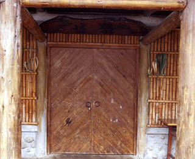
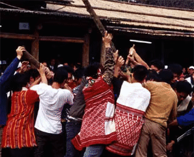
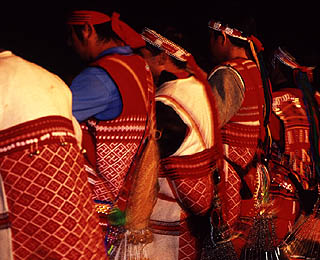
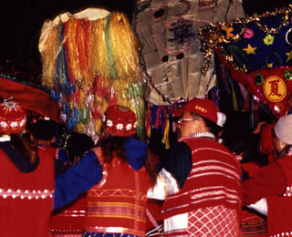

賽夏族是父系氏族社會，同氏族的家族會組成氏族祖靈祭祭團主導一年中祭儀相關事宜，矮靈祭則是全賽夏族的祭典。

賽夏族人現在居住在新竹縣與苗栗縣交界一帶的山區，而這是賽夏族人長久以來夾處於平地的漢人與山區的泰雅族人之間輾轉遷徙後的結果。族人又分兩群：居住在新竹縣五峰鄉大隘村與花園村一帶的北群；以及居住在苗栗縣南庄鄉東河村、南江村與蓬萊村境內的南群。南北兩群除了地域上的因素，也處於不同的族群生態：北群與泰雅族人為鄰，南群則和客家人來往密切。現有人口約五千四百人。
賽夏族的社會組織特色是父系氏族社會，在散居的聚落中，同氏族的家族會組成反映地域基礎的氏族祖靈祭祭團，祖靈祭團擔負決定並主導一年中的歲時祭儀舉行相關事宜之責任，包括祖靈祭、播種祭、掃墓等。矮靈祭（pasta?ay）則是跨越姓氏與地域分野、涵蓋全賽夏族的祭典，更反映了賽夏族文化中獨特的族群經驗。
賽夏族矮靈祭的複雜內涵反映在矮人傳說中，其儀式過程包括：結芒草約期、族人大會、求赦儀式、迎靈祭、宴靈祭、送靈祭、爐主回請。

賽夏族的矮靈祭
有關矮靈祭的複雜內涵，反映在矮人傳說中。有關這個傳說雖有不同的版本，但其大意如下：
矮靈祭的傳說
相傳很久以前，在河對岸的山洞裡，住著一群身高不滿三尺的矮人（taai），矮人善耕種且能歌善舞，他們教導賽夏族人耕種小米的知識，因此每年豐收祭時，賽夏族人會邀請 taai 前來一同慶祝。但是 taai 好色，常藉著參加祭典之際調戲賽夏族婦女，族人看在眼裡但是忌憚 taai 敢怒而不敢言。一次一位賽夏青年目睹婦女被欺侮後，忍不住決定召集族人報復。他們設計預先將 taai 平常回家途中休息的山枇杷樹樹幹鋸斷後塗泥予以遮掩，等到 taai 們爬到樹上休息時，樹因不堪負荷斷裂，使得在樹上的 taai 紛紛落水而死，只剩下 taai 和 toway 一男一女兩位矮人。他們警告從此賽夏族人將連年欠收，心有不忍便將矮靈祭相關歌舞祭儀知識傳給族人，但只有朱姓（tition）族人學會。爾後這兩個矮人沿著溪向東離去。果然矮人死後，賽夏族因作物欠收鬧飢荒，為了平息矮人的憤怒，想起有關祭儀之事，於是決定舉行矮靈祭以求得矮人的原諒，並由朱姓擔任主祭職至今日。
矮靈祭的儀式過程
過去矮靈祭每年舉行，日據時期因日人忌憚原住民的聚集予以禁止，後來改成每兩年舉行一次，並以十年為一大祭。以下為矮靈祭大致的過程：
1. 結芒草約期（gagawas）：
南北兩祭團代表會合結芒草約定矮靈祭舉行的日期。約定後，主祭的朱姓長老必須以珠串祭告祖先與矮靈們已經完成約期，並邀請祂們前來參加祭典。從今日起，taai 也來到族裡與族人一同等待祭典來臨，因此有關矮靈祭的一切禁忌都須遵守，族人也可開始練習平日嚴格禁止的祭歌，主祭的家庭也開始製作大旗（giragir）。
2. 族人大會（ajalah o）：
南北兩祭團商討有關矮靈祭籌備等各項事宜，並由主祭提醒避免觸犯會遭矮人處罰的禁忌，朱姓主祭則將芒草結發給各戶宣告矮靈祭將近，各戶將此芒草結帶回妥善收好一直到矮靈祭結束。Ajalah o 之後，祭典的準備進入白熱化的階段：各家釀米酒以供客人享用（稱為 basivai），族人開始祭場與祭屋的清理與準備。
3. 求赦儀式（la?abus）與 humabus：
在祭屋中由各氏族長老進行告解與調解儀式，由從 gagawas 以來家中所犯的錯說出，請長老向 taai 求赦。此外朱姓與其他氏族長老同時說出這兩年來姓氏之間的糾紛，若有則雙方在祭屋內由他人調解以求和解，因為族人認為參加矮靈祭不能三心二意，因此要先行告解，否則會被矮人處罰。同日下午舉行 humabus ，各家代表集結於祭屋前，朱姓主祭將酒與插有豬肉及其內臟的竹籤分給各家代表，一起面向東方而立，祭告 taai 與祖先矮靈祭要開始了。之後依照各家出錢的多少分豬肉塊，以為迎靈祭之用。
4. 迎靈祭（pak sa?o）：
清晨由朱姓主祭在祭場之祭屋首先開始迎薦矮靈。此一祭儀相當禁忌，外人不准在場。朱家完祭之後，其他氏族的長老才能在各自的祖靈屋中獻祭。首先將新採的芒草打結插於祖靈屋的四周，然後將木臼推出門外，面東唱迎靈的祭歌 rara?ol ，邀請矮人前來。長老吟唱祭歌的同時，家中女眷以木臼舂米，祭歌完畢動作亦停止。這些搗好的糯米（過去是小米）乃是為了製作當天中午用來迎矮靈的米糕。中午時分，家人將所需酒時準備好放在廳中地上，請矮靈前來享用。晚上則由朱姓領唱練習歌舞，雖是族人自己的練習不需著裝，但族人亦認為此夜起一起和矮靈跳舞。歌舞必須持續到天明。
5. 宴靈祭 kish tomol 與 papanawasak：
上午朱姓負責以樹皮編製具有神聖象徵意義的「百步蛇鞭」，製作過程仍相當具有禁忌。此後幾日，朱姓男子負責將此神鞭帶出祭屋供族人觸摸，相信會帶來健康與好運。迎靈祭後開始宴靈，族人著盛裝（包括戴上臀鈴 tabagasan）、通宵達旦地歌舞，親友亦陸續返鄉。族人舉著象徵十年大祭的 sinnadun 繞場，氏族祭帽 giragir 也由男性族人舉著進入會場的舞隊中。
6. 送靈祭（papa?osa）：
晚上以唱迎靈祭歌開始，儀式一直持續到清晨，進入最關鍵的時刻。朱家子女在祭屋中加緊舂米製作米糕（dinnauven）已備最後一天的儀式所需。約在清晨六點，通宵竟夜的舞隊突然停止歌舞，舞圈縮成好幾層的同心圓，所有的祭帽聚在祭屋前朝向東方，由長老唸一遍送靈歌的歌詞後就帶眾人雙族並跳大聲地唱送靈歌。朱家女眷負責將給矮人的飯包直向東方並立即轉回祭屋分享米糕（代表矮人留給朱家的福份）。接下來，進行一連串以男性為主的儀式，如砍竹梢、伐榛木、折榛木等，完成了送靈的過程。族人們算可以鬆口氣享用主祭準備的酒食。
7. 爐主回請：
儀式結束後，擔任爐主的氏族長老必須回請主祭朱姓長老，再唱一次砍竹梢的歌，分享象徵矮人福份的食物。
賽夏族的歌謠以矮靈祭祭歌最重要，且平日是禁唱的，整套祭歌的詩形整齊猶如結構龐大的史詩形式，全部唱完大約超過四個小時。

賽夏族的居住地介於泰雅族與漢族之間，很早就明顯受這兩種文化的影響。他們的傳統音樂，有人認為與泰雅族相似，但與漢族音樂在音組織、樂式、節奏等方面則全然不同。賽夏族的歌謠大致可分為矮靈祭的祭歌與一般所唱的歌。其中以矮靈祭祭歌最為重要，且平日是禁唱的。矮靈祭祭歌共有十五首，每首分若干節，每一節句數不一，但每句都含七音節，每節以一種植物的名稱之尾音押韻，演唱時以三種方式反覆唱出每一章節的詞句，每一反覆的結尾多為襯字或母音唱法。整套矮靈祭祭歌的詩形整齊，猶如結構龐大的史詩形式。全部唱完大約超過四個小時，堪稱是臺灣原住民音樂中最獨特的文化瑰寶。
矮靈祭祭歌的特色
『矮靈祭歌』的詞曲是有特色又整齊的排列型，其文學形式為詩的呈現，富含文化價值。祭歌總共十五章，每章有一至六節，每節最少有五句，最多達十二句，並以一種植物的尾音押韻，具備詩型完整、辭意豐富的史詩形式，而且以三種方式反覆唱出每一章節的辭句，每一反覆結尾有一長串虛字，整套祭歌出現虛字的部位及方式非常為講究，能夠充分烘托出要表達的情意。矮靈祭祭歌的風格，敘述過去族人與矮黑人交涉時，神祕的氣氛。顯露出族人對矮人所抱之恩恩怨怨時，轉而停頓、幽深而悲涼的意義。現在我們就來欣賞歌詞的意義。
第一章：
招請 ─ 先招請矮人之 koko ，再招請一般矮靈，敘述矮靈成隊由東方之河前來的樣子。並請健壯的矮靈先來視察族人的收成情況。最後敘述生病的矮靈獨自最後到來。
第二章：
以臺灣赤楊樹 SiboLOk 來比喻賽夏族人，要如同 SiboLOk 般快速繁衍，散佈各地。
第三章：
我們（矮人）內心忐忑不安，不知會被賽夏人所陷害，為何不像稻穀般將我們照顧，卻害我們落水變成鬼魂。本章並敘述矮人對賽夏人的叮嚀與訓誡 ─ 不可浪費食糧、要助人並與人分食及注意小心會傷人的小動物（水獺 sani）。
第四章：
敘述矮人訓示族人不要欺負媳婦，要好好照顧，勸勉婦女不可偷懶。
第五章：
敘述過去矮人將偷懶者帶到勤奮工作者處巡看，希望懶惰者有所改進。此章節一方面，責怪賽夏人用計陷害矮人，一方面訓勉族人要好好耕作才有收穫，矮人雖死，族人仍要好自為之。
第六章：
講述的是雷女的故事。雷女是雷公的女兒，由天而降成為朱姓第一位祖先的媳婦。雷女為賽夏族人帶來小米種子，並且能夠快速的將田地開墾好，但是雷女卻不能摸鍋子，公公卻強逼她摸鍋子煮飯。雷女摸了鍋子，轟然一聲，卻也消失不見了，只見一株芭蕉樹屹立在一旁。詞曲之中，訴說著往事種種，及雷女枉死的哀怨之情。
第七章：
以雷女的故事來比喻矮靈枉死之後，對賽夏人哀訴之情 ─ 我們被害而死，你是否要拋棄我們，去你們的地方，一聲不響的走了。賽夏人祈求：『矮人（靈）啊！你們要憐顧我們。』
第八章：
此章說明酸藤 ae'oeng 茂盛成長，果實裂開，內絮飄飛之際，我們矮人好像來到黑暗的地方，看不見東西，你們不要忘記我們訓誨教導之事，否則又會再起衝突。
第九章：
此章說明酸藤 ae'oeng 回憶過去矮人與賽夏人交往的情形。雙方沿著 SiboL 會合時，用鹽敷木架橋，還好有矮人的指導才能順利會合。如今，矮人大多數已經成為鬼魂，心中不免悲傷。
第十章：
此為送靈之日所唱，當唱這首歌時，就意識到分離的時刻來臨了，這首談到矮人教導賽夏人織布作衣的情況。『矮人』說：『當我們走後，你們就不善於織布了。』
第十一章：
此章是敘述 Maya, Boon 從大霸尖山下來繁衍子孫的故事。用不同的曲調說明近親要防止結婚，及聊天歡樂的情況。
第十二章：
為送行之歌，唱時要面向東方跳躍唱出，同時眾人要將身上的芒草結都丟掉，表示祭典要結束了，請矮靈回去故居，千萬不要逗留在賽夏人居住的地方。歌詞裡說到：一切都結束了，可以走了！沿著 Sikay 河歸去，帶著糧 Loza' 和鰻魚作的菜回去。
第十三章：
是緩行之歌，要年紀大的矮靈慢慢的走，顯露出賽夏人對矮人依依不捨的情意。歌詞內容為：吃完再走，沿河而去，經 Sikay 河歸去，當您腿酸發麻、彎曲時，用黃藤當作拐杖。
第十四章：
這章說明祭典最後一天清晨，各姓代表上山砍取榛木的時候，唱著：注意啊！不要無精打采，以防落入別人的陷阱，如果太累或心情不好就不要去，以免發生意外。注意啊！要綁芒草，榛木是由上面下來的。此章主要說明彼此間的害怕而互相提防。
第十五章：
為等待榛木之歌，是在祭場等待榛木歸來時與砍榛木者對唱的歌，此時『榛木與芒草』我們可以將之視為矮靈的化身，前一章說明彼此間的害怕、提防，此章則說明賽夏青年們勇敢的精神。青年們唱道：等待榛木，榛木來了，誰怕榛木？
在所有歌詞章節的意義中，我們可以發現十五章中，有邀請之歌、有敘述兩族交往的情形，還有敘述故事的歌、送矮靈時所唱的歌、勸世曲等，所有的歌曲在在表現賽夏族文化的特色，更是文學的表現。毫無疑問的，矮靈祭歌是臺灣文化的瑰寶，它所呈現的文學、藝術價值，值得大家珍惜與學習。但是，由於祭歌本身結構複雜，且非常隱密幽深，必須遵守的禁忌很多，如果不是祭典期間不得唱出來，以免觸怒矮靈。
賽夏族傳統樂器
賽夏族的文化受泰雅族與漢族的影響顯著，而其傳統音樂與泰雅族音樂有相似性，與漢族音樂相較之下則全然不同（呂炳川：1982，P. 92）。現今賽夏族的傳統音樂以歌謠為其中心，根據記載賽夏族曾經使用口琴、縱笛、弓琴等樂器，目前已經失傳；在日據時代，賽夏族人曾經向漢人購買胡琴使用，但賽夏族的傳統歌謠卻不曾受漢族音樂之影響（呂炳川：1982，P. 92）。
除此之外，賽夏族有一其獨特的伴奏樂器 ─ 臀鈴。
臀鈴，賽夏語稱為 tabaaa'sang，是指「製造音效」之音。這種矮人祭專用的裝飾器物，是在跳舞時，由舞者繫綁於腰部，讓臀鈴下擺垂吊的竹管、子彈殼、或不鏽鋼管，配合步節奏擺動，發出聲響製造出特殊的音效。
臀鈴是屬於個人所有物，南賽夏隨各家意願自由製作；北賽夏則有製作姓氏或家族的規定。一般由男子負責製作（如妻子懷孕則不可以觸碰），使用佩帶者男、女皆可。
臀鈴的製作，中央的主體早期是以麻編的網袋為底，上縫布面，裝飾鏡子、珠子特增加美觀的飾物。過去串飾用的珠子，主要是野生薏米的果實，賽夏語稱為 titibon（也就是朱姓姓氏賽夏語的原意），學名 Coix lacryma-jobi Linn ，因為這植物雄穗的果實中心部分有孔，便於穿串作為裝飾。現在中央主體多以布料製成略呈三角形的布包，裝飾珠子也改用塑膠珠和亮片。臀鈴主體布包的低端以貫串的珠鏈繫吊垂鈴；一個臀經常垂吊多達四、五十個垂鈴，可發出響亮的音效。
矮人祭之歌 (苗栗向天湖部落)矮靈祭祭歌的風格，敍述過去族人與矮黑人交涉時，神祕的氣氛。詞曲呈現詩的形式，富含文化價值。
矮靈祭的舞蹈是為了配合吟誦式的歌曲，通常是由老人領唱，隊伍的排列通常長者在前，較有特色的是穿戴臀鈴以身體前後擺動發出韻律聲。

矮靈祭的舞蹈較意義大於社會交誼意義，舞蹈是為了配合吟誦式的歌曲。通常是由老人領唱，隊伍的排列雖無明顯階級，但往往是年長者在前、年幼者在後。舞步以類似行走的二步舞為多，隨著曲調轉快會出現跑步似的舞步。隊形以圓形和螺旋形為主，順時鍾與逆時鐘行進交互出現，順時鍾行進時以隊伍尾端為首向內緊縮；逆時鐘行進時則為擴散。
較有特色的是舞蹈隊中有穿戴臀鈴的族人，為使臀鈴作響著重身體的前後擺動以發出韻律的聲音。此外舉各氏族的祭帽者，也常在會場中奔跑並上下晃動祭帽，以為助興。
矮靈祭祭歌 (苗栗向天湖部落)矮靈祭歌總共十五章，所有的歌曲充分表現賽夏族文化的特色；舞蹈隊伍中有人穿戴臀鈴，是獨特的伴奏樂器。